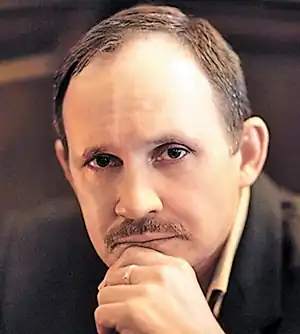
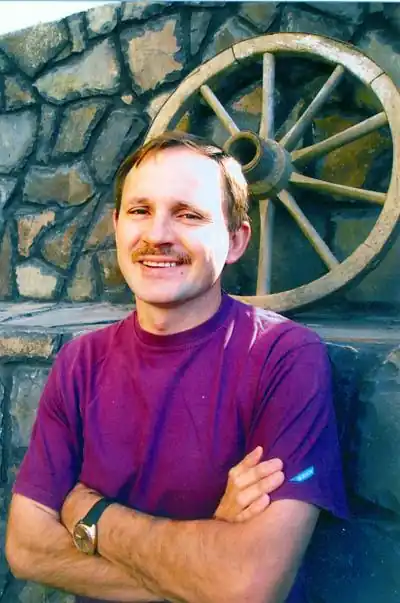

Мирослав Іванович Дочинець
Україна, 03.09.1959
Мирослав Дочинець — знаменитий український прозаїк, публіцист, філософ та журналіст. Усім шанувальникам сучасної української прози має бути знайоме ім’я Мирослава Дочинця. Він упевнено займає провідне місце в списку найпопулярніших авторів сьогодення, а його твори б'ють рейтинги продажів в усіх книгарнях України. Народився майбутній прозаїк третього вересня 1959 року в освіченій родині вчителів. Батьки дуже вплинули на світогляд юного Дочинця та привили йому любов до української мови. Тому не дивно, що мрія стати письменником у маленького Мирослава з’явилася ще в шестирічному віці. Мирослав Дочинець почав проявляти письменницький талант ще в ранньому віці. Вже в шостому класі його роботи друкувалися у шкільних виданнях, а в дев’ятому — принесли йому перемогу в літературному конкурсі юних майстрів слова. В 1977 році він вступив до Львівського університеті ім. І. Франка на факультет журналістики. Будучи студентом, приймав участь у багатьох літгуртках, у тому числі відвідував студію "Франкова кузня", та набирався досвіду в редакції спочатку університетської газети "За радянську науку", а потім газети "Джерела". Його професійна діяльність розпочалася в 1982 році, коли Мирослав Дочинець став співробітником в газеті "Молодь Закарпаття". В 1990 році він відкрив демократичну газету "Новини Мукачева", яка в свій час користувалася великою популярністю на Закарпатті серед населення. Паралельно був власним кореспондентом таких видань як "Карпатський край", "Срібна земля" та "Фест". Через вісім років Мирослав Дочинець (книги якого вже набували популярності на батьківщині) заснував видавництво "Карпатська вежа". Протягом десятиліття в якості директора та головного редактора він опублікував понад триста робіт українських авторів. Творча діяльність та книги Мирослава Дочинця В літературному колі ім’я Мирослава Дочинця почало активно лунати у вісімдесятих роках. Йому належить авторство понад двадцяти книжок, ("Світован", "Хліб і шоколад", "Лад", "Місячна роса", "Руки і душа" та ін.) більшість з яких стали українськими бестселерами. Найбільшу популярність серед співвітчизників набула книга "Многії літа. Благії літа" — заповіти 104-річного карпатського мудреця про те, як прожити довге, здорове та щасливе життя. Вона увійшла в топ найпопулярніших українських видань за рейтингом "Книга року-2010". Не менше привертають увагу читачів і такі книги Мирослава Дочинця, як "Вічник. Сповідь на перевалі духу", "Криничар" та "Горянин. Води Господніх русел". Ці твори влучно називають трьома духовними братами. Окрім книжок для дорослих, він пише і для дитячої аудиторії: "Бранець Чорного Лісу", "В’язень замку Паланок", "Напутні дари – для дітвори". Прозою українського письменника все більше цікавляться за кордоном, а його репутація талановитого митця виходить на міжнародний рівень. Романи "Лис" та "Вічник" планують перетворити на кінофільми. Також в лондонському студентському театрі було розіграно п’єсу за сюжетом твору "Вічник". Його роботи перекладаються на іноземні мови, зокрема російську, англійську, польську, словацьку, італійську та навіть японську. Недаремно фанклуб читачів вітчизняного прозаїка поповнюється все більшою кількістю прихильників. Влучні вислови, яскраві образи та життєві мудрості — ось чим приваблюють книги Мирослава Дочинця, купити які можна в інтернет-магазині "Букля".